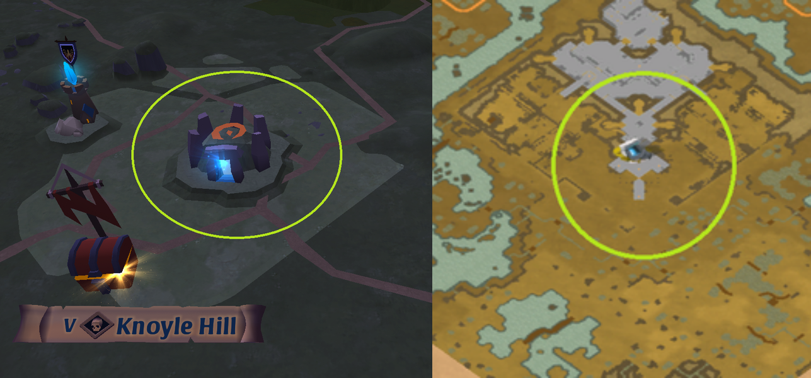

Albion has a lot of different ways to do PvE. In this tutorial, we will mainly focus on the so-called Randomized Dungeons and Static Dungeons. Especially at the beginning of the game, those are the ones you are most likely to encounter. We dive into Corrupted Dungeons and Hellgate in another tutorial.
As the name implies, Randomized Dungeons appear at random in any region of tier 4 and above. You will not see them on your minimap (unless you used a Dungeon map but we'll get to it later), you will just see them as you travel around a given region. They exist in 3 main types: Solo Dungeons, Group Dungeons, and Large Group/Elite Dungeons. The tier of mobs in that dungeon is that of the region it is located in. Here you can see how they look like in the overworld. Note that there are multiple variants of group dungeons entrances (indicating the faction inside), but they all have that blue-ish glow, while solo dungeons are green, and elite dungeons are gold.
Additionally, you may find some "butterflies" around the entrance. It means the dungeon is "enchanted". Green butterflies imply T1 enchant, blue for T2, and purple for T3 (much like gear enchants). While these dungeons may spawn at random, you will most often see them when you use a map. The difficulty of these dungeons is higher, but the rewards are also better.
When you kill mobs, or in chests, you may find "Dungeon maps". You can also buy them (or sell them) on player markets. Using this will direct you, via the world map, to a specific randomized dungeon. It is the best way to find enchanted dungeons. You can find the increase in difficulty on the wiki. A dungeon spawned from a map is invisible to everyone but you until you have entered it, so there is no risk to have the dungeon "stolen" from you. Once it's opened though, anyone can get in.
Solo dungeons, despite the name, are targeted for solo and duo players. Group dungeons are for groups of 3-5, while elite dungeons only spawn once per day per region in blackzones (unless you use a map), and require large groups of 10-20 players.
Inside a dungeon, the same rules applies as the region it is in. If you are in a blue zone, the dungeon follows the blue zone rules of PvP. It means that it is pretty dangerous to enter a dungeon in blackzones! There are a few tips to make sure you don't get massacred:
1) You will get an invulnerability shield as you enter a dungeon. If you see enemies and don't want to take the fight, it gives you a grace period to get back outside
2) A few meters from the dungeon entrance, you will find at least one enemy. If you don't quickly find enemies, it means someone else is already running the dungeon. You might want to get out. You can always leave a dungeon using the "mount" key.
3) If you enter a dungeon, it will disappear from the surface after 60s (blue/yellow zones) or 90s (red/black zones). If you want to run a dungeon safely, enter it, wait near the entrance (even if an enemy comes in, he will have cooldowns, so no risk for you), and if enemies come in, you can just leave. After 90s, if nobody has entered, you can continue your dungeon in total safety. Each time someone enters though, the timer resets.
These "dungeon games" of entering/exiting dungeons are common tactics in red/blackzone pvp to try to force the enemies into cooldowns and keeping the advantage, or as a mean to escape by using these cooldown/invuln properties.
The locations of dungeon spawns, much like ressource nodes, is fixed. So there is a chance that, once you exit a dungeon, another one might spawn. But it could be a different type of dungeon, such as a group dungeon, corrupted dungeon, etc...
Inside of the dungeon, you will encounter mobs in a fairly linear path. Defeating them is not mandatory, but it's a pretty good source of fame as well as silver, and you might always get a few lucky drops. You will sometimes find "minibosses". Defeating them gives you access to a chest behind them. The color of the chest indicates its value: green, blue, purple, or the very rare gold, in increasing order of rarity. Some minibosses might make the dungeon "branch", so make sure to go back after defeating them to continue the dungeon. At the end, you will always find the boss, which works much the same, protecting a chest. Once he is defeated, you can exit the dungeon by using the "mount up" key. If you are in a party, the party leader decides how the loot is distributed. By default, the game automatically splits the loot so that each member gets a share (not necessarily a fair one though), but you can change it if you want someone with better escape tool to take it all.
You can also find "shrines". Small shrines will give to one user a random buff for one minute and are found in solo dungeons, you can find the list here. In solo and group dungeons, some bosses will, instead of a chess, guard a large shrine. This effect will be given to all players not downed, and will either be a 40% increase in fame gained from killing mobs, or a 200% increase in silver dropped. Those last for 200 seconds.
Static dungeons is another common type of dungeon. As the name implies, they don't change position randomly. They are fixed on the map, you can easily see on the worldmap the position of the static dungeons, and their entrances on the minimap.
Their entrances are fixed, and anyone can enter. As such, you will often find multiple parties running them at the same time. Mobs will periodically respawn. Occasionally, you can see on the dungeon minimap that a chest has spawned. After defeating the guarding boss, the winning party can open it and get the loot. But remember that everyone can see this too, meaning that in red and black zones, you have a high chance of fighting (and dying).
Some static dungeons might have an "open world" part above, with mobs protecting the entrance. It can for exemple be a big castle. Some other entrances are "naked", meaning you can just enter them without any problem.
Mobs in static dungeon are usually much tougher than outside, so don't neglect healers, and remember to try avoiding the AoEs. Mobs will not kill you and only "down you" if you lose your health, and will stop fighting if everyone is downed or disengaged. But if an enemy party in a red/blackzone finds your group downed, they will finish you to get your gear. Try not to get downed, as you can put your entire group at risk while they try to protect you until you get back up.
Static dungeons can sometimes serve as shortucts, by having entrances in different regions. It can make you gain quite a lot of time on your travels. Funnily enough, if you use a map for a solo dungeon or a hellgate, showing you the path to your destination, it might show you such shortcuts by telling you to go through one such dungeon.
Occasionally you might get a notification in game "enemies are regrouping" or something similar. That means that nearby static dungeons will be tougher and give more rewards. If you are in such a dungeon already and it's proving quite tough for your party, you can always leave by using the "mount up" key. It might be preferable to flee than to lose all your gear and loot.
Albion Online and all associated designs, logos, and images are the intellectual property of Sandbox Interactive.